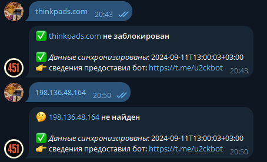

| Ник | Пост | Дата |
|---|---|---|
| anon41791379 | https://thinkpads.com/ кто блочит? через vpn открывается. | 2024-09-11T10:08:54.171Z |
| JIPCOROD |
именно этот сайт добавить в “GoodbyeDPI” не выйдет, он заблокирован изнутри. По той же причине его нет в “антизапрет”. Рекомендуется купить впн. В последние 2 года региональный блок изнутри сайта - явление не редкое, но чаще что-то ещё пишется (например https://pephop.ai), а не просто долгая загрузка страницы такой же топик… ВПН/прокси теперь нужен в любом случаи для доступа ко всему интернету | 2024-09-11T10:50:18.665Z |
| electrifying | Сайт заблокирован по ip. Либо сам сайт блокнул ру регион, либо ркн. Антизапрет тут не поможет | 2024-09-11T10:50:21.842Z |
| JIPCOROD |  | 2024-09-11T10:50:53.390Z |
| TesterTi(TesterIt) | Через censor tracker открывается , если добавить в список проксируемых | 2024-09-11T12:31:57.530Z |
| anon41791379 | я ставил censor, но тогда не работает антизапрет, то есть, не открываются картинки на deviantart. вроде у цензора поддержка отсутствует. но может тоже можно запроксировать . приходится выбирать одно расширение. | 2024-09-11T14:24:33.019Z |
| artenox |
Не пускает россиян! timeout с серверного нецензурного ru ip. | 2024-09-11T15:24:58.743Z |
| TesterTi(TesterIt) | Добавьте в сensor wixmp.com, и будут картинки. Как понять, что именно добавлять в сensor? Откройте сайт deviantart.com и посмотрите в логе браузера( по F12 либо CTRL+SHIFT+J, вкладка Сеть/Network), куда идут ошибочные запросы. Вот эти домены и добавлять. В данном случае это wixmp.com | 2024-09-11T16:10:01.260Z |
| Ori | В цензотрекере заходите в настройки → регион и отключаете “открывать сайты из реестра”. После этого прописываете нужные сайты в разделе “проксируемые сайты”. Теперь проксироваться будут только прописанные вами сайты и цензортрекер не будет мешать gdpi/zapret или что вы используете. Туда же можно прописать, например, 4pda, в котором раздел про ВПН не открывается из РФ и т.п. | 2024-09-11T19:52:14.143Z |
| anon41791379 | censor tracker мешает антизапрет proxy.pac, т.к. одно расширение контролирует прокси. | 2024-09-11T20:50:57.769Z |
| Ori | Ну тогда, как вам посоветовал TesterTi, можно добавить самому этот сайт в цензортрекере. А антизапрет отключить. | 2024-09-11T20:55:40.784Z |